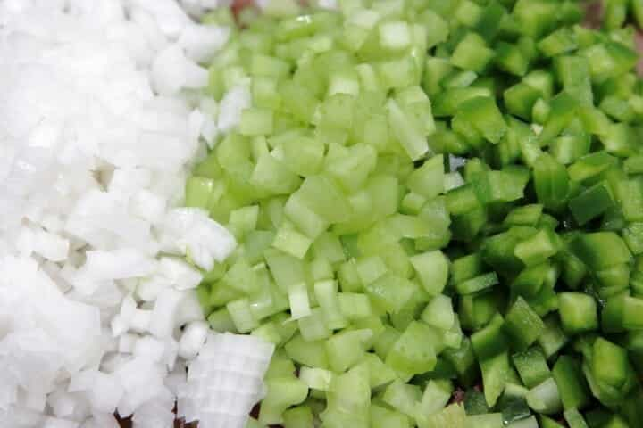
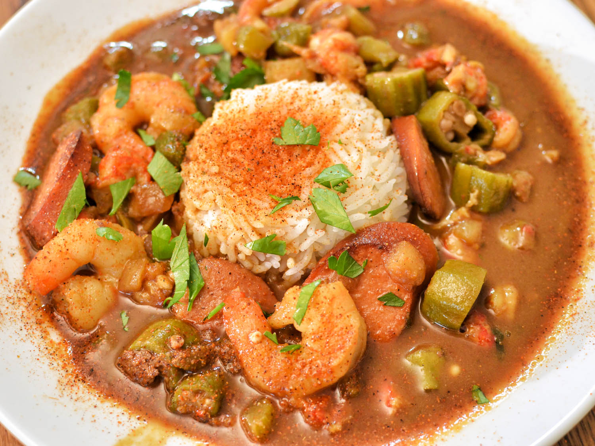
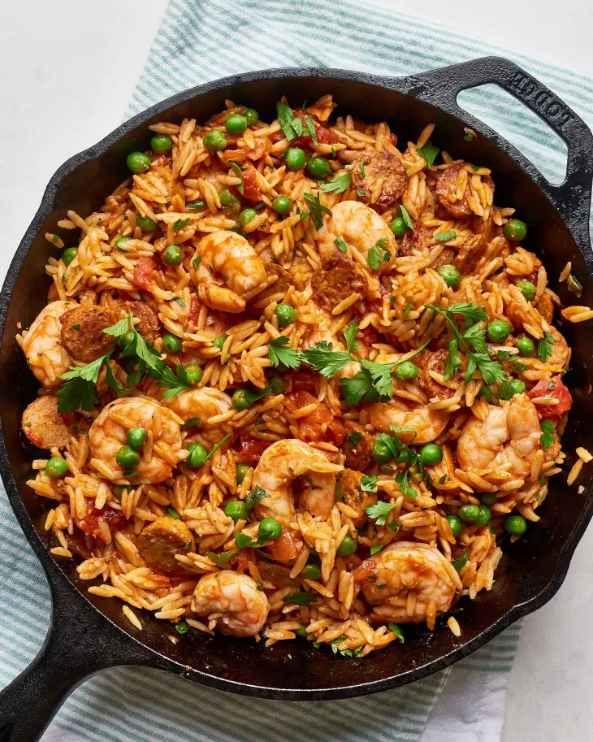
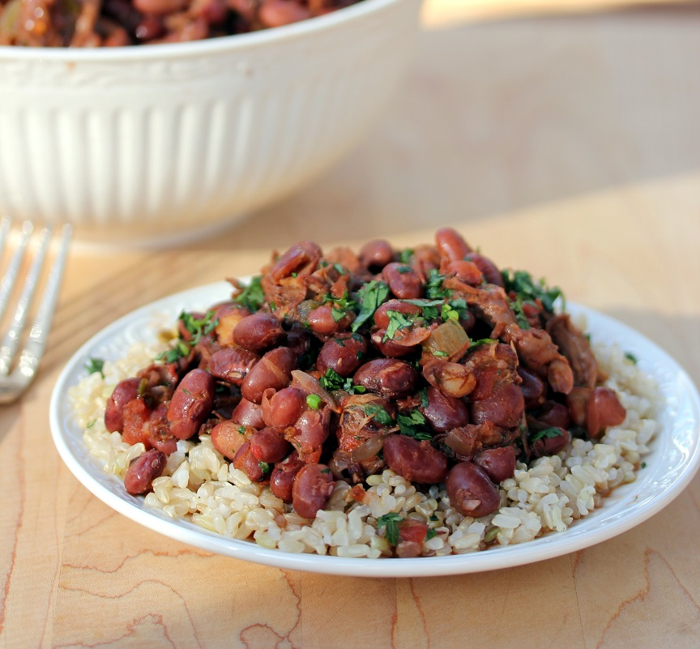
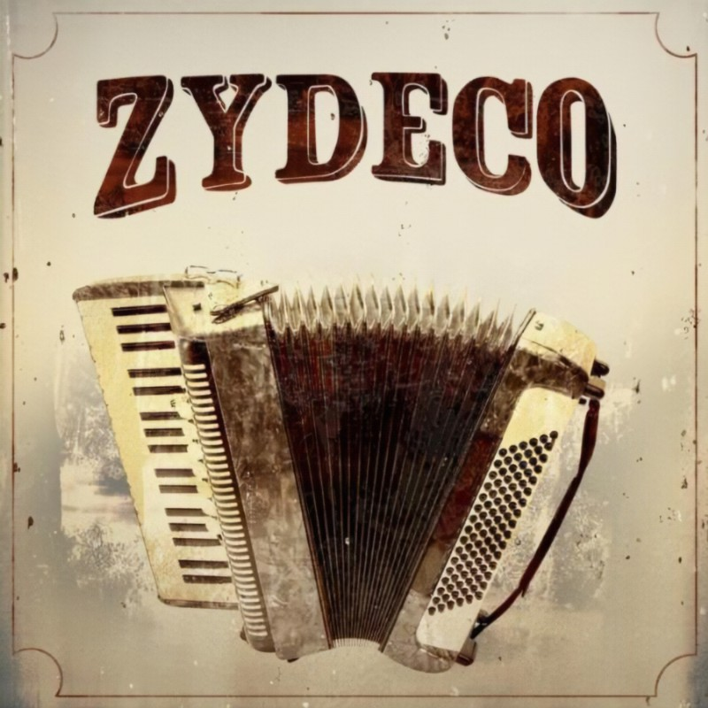
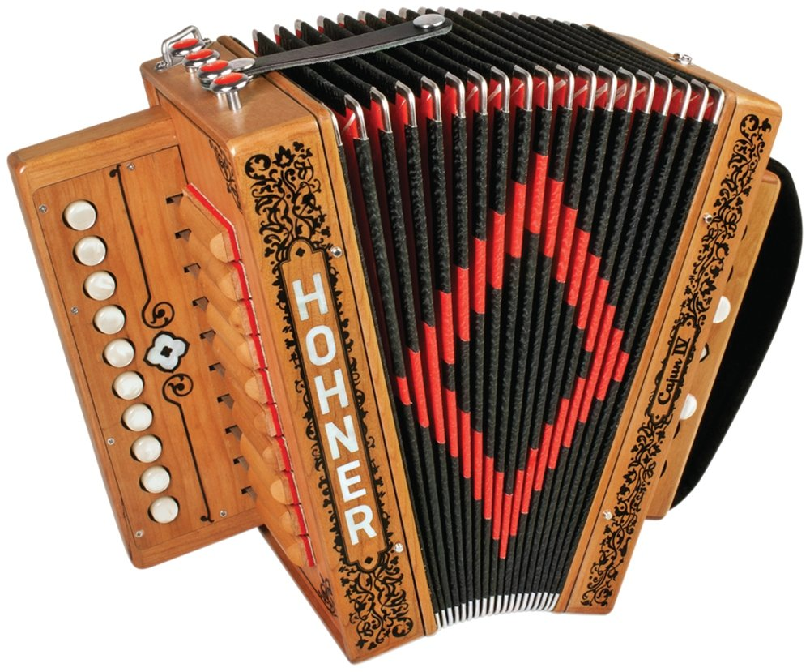
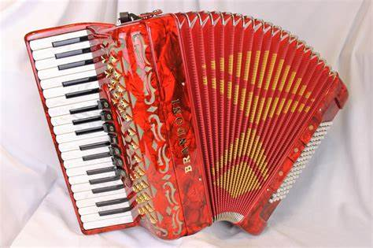
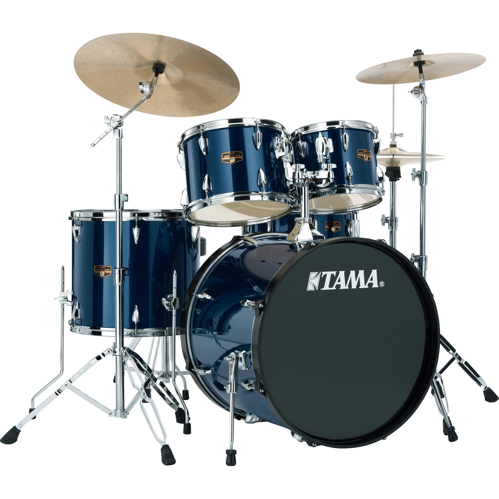
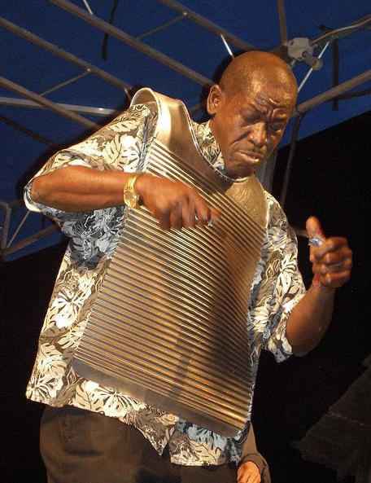

1. Who are they and where are they from?
⚠
You have to know that the creoles ≠ an ethnic group
The different meaning of the term "creole"
A. Before the end of slavery
This term was originally used to distinguish the persons born in Louisiana
and most generally the persons born in French or Spanish colonies from those born elsewhere.
This term was reserved to the white people because at this time
black people were not concerned by this calling because of their state of slaves so they were not considered as human being
B. After the end of slavery
The black people became also concerned by this calling because they were no longer slaves so they were also considered as human being even if some white creole were against that.
C. Nowadays
Currently, the term “creole of Louisiana” designates the descendent of these people.
Their complexion doesn’t matter. They can be white, dark-skinned or light-skinned even if most of the current creoles are dark-skinned .
Unfortunately we can’t estimate how many there are because some creole identify
themselves as Cajun(an ethnie in Louisiana). I mean the white creoles of course and others identify themselves
as African American. I mean the dark and light-skinned and there are also some persons from other
communities like the native americans and the cajun who identify themselves as creoles so we can’t count
them precisely.
2. The language they use to speak
The Louisianan creoles speak.....
English......
üòÖ
I think it is quite logical because they live in Louisiana which is English speaker country's state.
But....
They speak their own traditional language which is called... :
- The lousiana creole
- Kouri-Vini
- Kréyòl
- Fransé
- Kréyol La Lwiziàn
- Gombo french
- Courimavini
- français nèg
- nèg
This language actually has a lot of namesüòÖ
It belongs to the group of the creoles languages which use a french vocabulary. You can see it in a lot of words like for example...
The numbers
")
The kouri-vini is currently mainly spoken by Creole, but also by Cajun and Native American. It is spoken by less than 10 000 speakers so unfortunately this language is endangered.
3. Their culture
- The creole cuisine
- The creole music
3,1. The creole cuisine
Creole cuisine is very famous for its unique style of cooking. It started in the early 1700’s.
This cuisine was very influenced by European, African, and Native American cuisine.
It is also famous for....
A. The Holy trinity
This holy trinity is a trio of ingredients which are nearly always used in the creole cuisine. It is composed of:
- onions(on the left of the picture)
- celery(at the middle)
- green peppers(on the right)
B. The gumbo

Gumbo is a traditional creole dish which is a melting of differents cultures like French, Spanish,
native-American, African and german.
It is a stew composed of meat or seafood. It can be crab, crawfish. You can also put chicken in the
dish. Obviously the Holy trinity is also used.
Gumbo was mentioned for the first time in the 19th century, in 1802. It was added in a lot of cooking books
in the 2nd part of the 19th century. Now, gumbo is one of the main dishes of Louisiana.
C. The jambalaya
Jambalaya is a dish made with rice, ham, shrimp(=crevettes), and sausage(=saucisse). It is generally quite spicy.
D. The Red beans and rice

This dish is from Louisiana and
has creole and Caribbean influences. It is composed of……red beans and rice.
üòÖ
But there is also the famous Holy trinity
3,2. The creole music
The creoles had a very important musical influence in Louisiana. They created their own musical genre in
the 1920’s. It is called....
.
It was created by black Creole communities on the prairies of southwest Louisiana.
At the beginning, Zydeco was only sung in Louisiana French or Creole. But during the twentieth century, some creole artists began to add a new language in this type of music: English Today, Zydeco is sung in English, Louisiana Creole and Colonial Louisiana French.
Zydeco is the melting pot of different music styles. It mixes:
- blues
- jazz
- Cajun Music (was originally called "Old Louisiana French Music").
The main musical instruments of Zydeco
The cajun accordion
The piano accordion
The drum set
The vest frottoir

The last one is not very known in the western world
This very original instrument looks like a washboard and is usually worn over the shoulders.
To make music with, you have to use spoons and make some noise with them.
Here you can find a video about Zydeco music